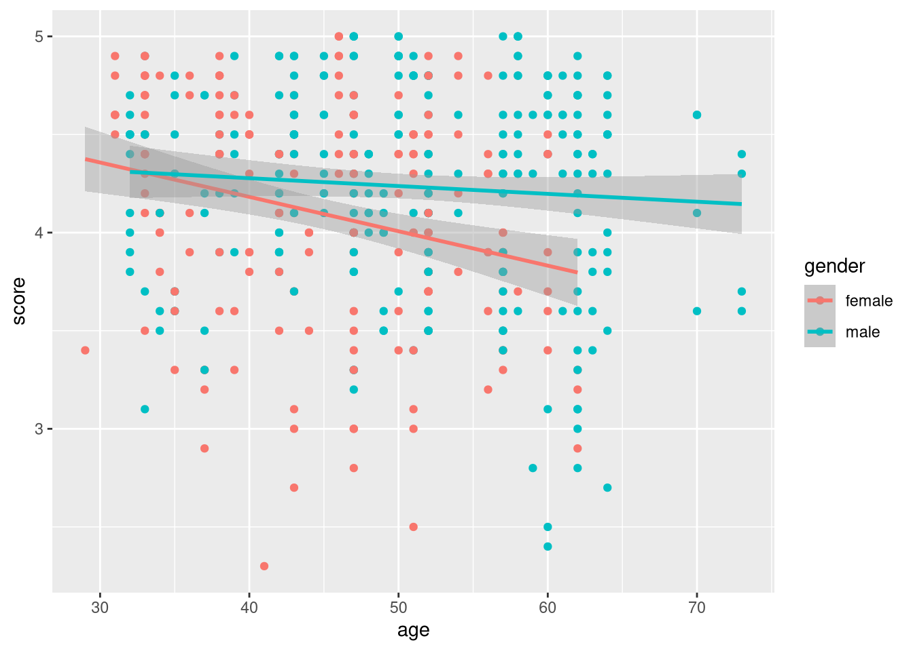
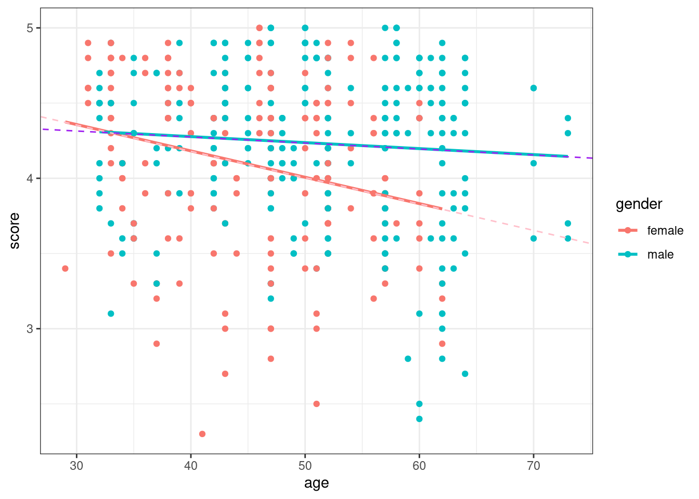
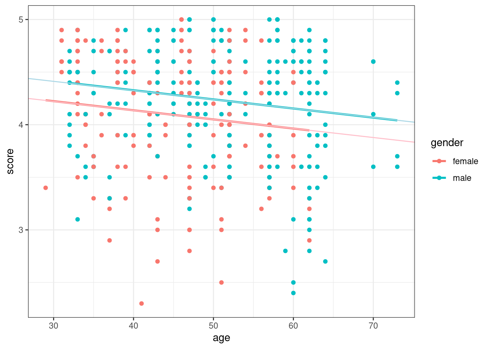

library(tidyverse)
library(moderndive)Regression Stuff
Some Graphs
Create a scatterplot of score versus age using the evals data set.
ggplot(data= evals, aes(x = age, y = score, color = gender)) +
geom_point() +
geom_smooth(method = "lm")`geom_smooth()` using formula = 'y ~ x'
mod_full <- lm(score ~ age + gender + age:gender, data = evals)
mod_full
Call:
lm(formula = score ~ age + gender + age:gender, data = evals)
Coefficients:
(Intercept) age gendermale age:gendermale
4.88299 -0.01752 -0.44604 0.01353 ggplot(data= evals, aes(x = age, y = score, color = gender)) +
geom_point() +
geom_smooth(method = "lm", se = FALSE) +
theme_bw() +
geom_abline(intercept = 4.88, slope = -0.01752, color = "pink", linetype = "dashed") +
geom_abline(intercept = 4.88-.44604, slope = -0.01752 +.01353, color = "purple", linetype = "dashed")`geom_smooth()` using formula = 'y ~ x'
Suppose we want a parallel slope model.
ggplot(data= evals, aes(x = age, y = score, color = gender)) +
geom_point() +
geom_parallel_slopes(se = FALSE) +
theme_bw() +
geom_abline(intercept = 4.48, slope = -.0086, color = "pink") +
geom_abline(intercept = 4.48 + .19, slope = -.0086, color = "lightblue")
mod_par <- lm(score ~ age + gender, data = evals)
mod_par
Call:
lm(formula = score ~ age + gender, data = evals)
Coefficients:
(Intercept) age gendermale
4.484116 -0.008678 0.190571 get_regression_table(mod_par) |>
knitr::kable()| term | estimate | std_error | statistic | p_value | lower_ci | upper_ci |
|---|---|---|---|---|---|---|
| intercept | 4.484 | 0.125 | 35.792 | 0.000 | 4.238 | 4.730 |
| age | -0.009 | 0.003 | -3.280 | 0.001 | -0.014 | -0.003 |
| gender: male | 0.191 | 0.052 | 3.632 | 0.000 | 0.087 | 0.294 |
The slope for males in the mod_full is -0.0039928.